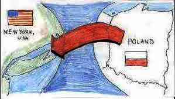

Donut Delights was started in 1971 by Melvin Furballski.
An immigrant baker from the far east coast of Poland.
Melvin fled his country in seach of a better life for his family. In 1970 he landed in New York City
and by chance he found an open seat on a bus headed west.
When an unexpected mechanical failure forced a three day delay in Champaign, Illinois
He saw the need for a donut shop!
With only one hundred dollars in his name, he found an abandonded breadshop,
and within two days he had one of a kind donuts flying off the racks faster then he could make them!

In the mid 80's a fire destroyed many of the shops records...But not the recipes.
While many people might have viewed the fire as an excuse to quit,
Melvin instead used it as an opportunity to reconfigure the interior design, allowing him to add the coffee roastery section.
Donut Delights newly remodeled interior, with the added coffee roastery section.
Be prepared for the inviting mixture of aromas from fresh-roasted coffee beans
and fresh-baked donuts.

Now you can find that same great donut recipe plus dozen more still being made
with the same love and care as when Donut Delights first opened.